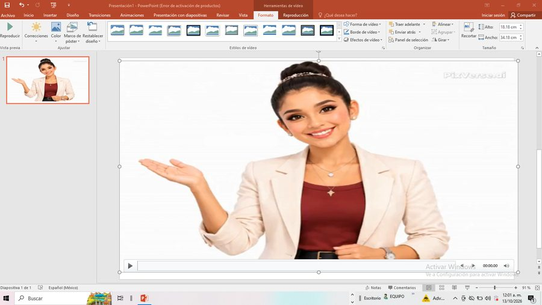
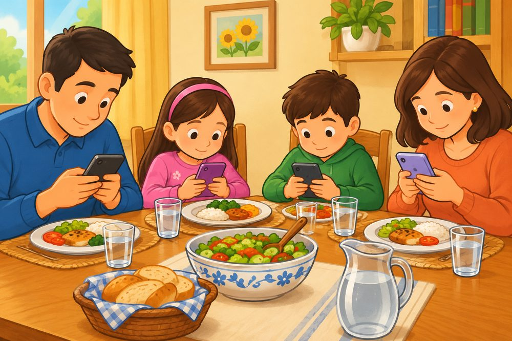
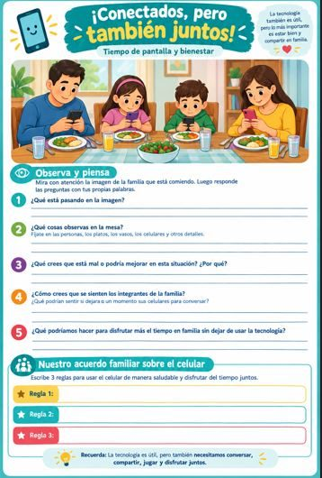
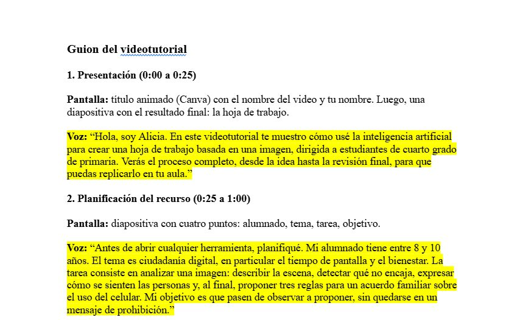
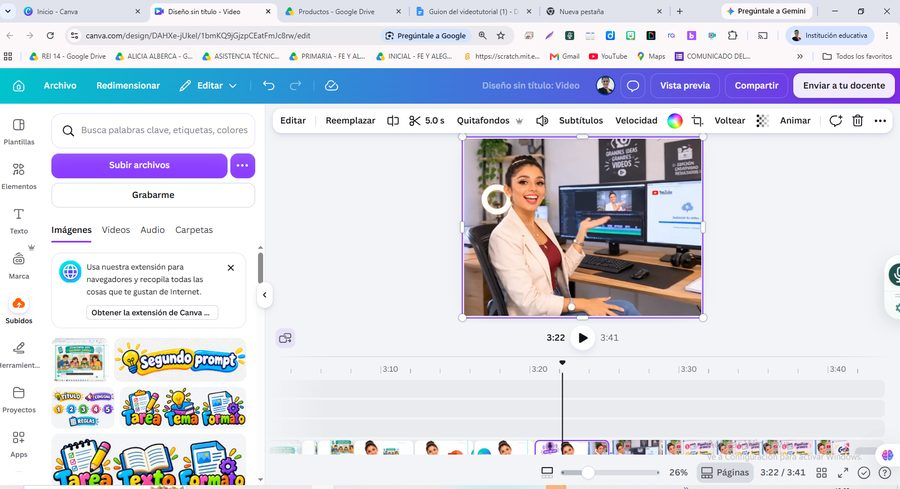
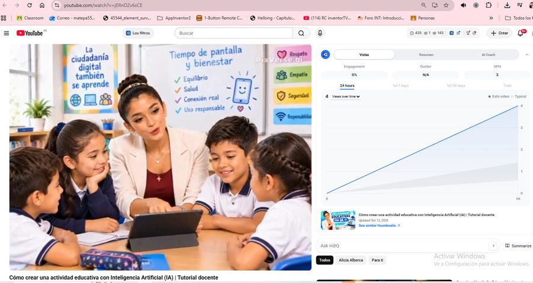

Creación de contenidos digitales
Imagen didáctica con IA y videotutorial docente
Diseñé una hoja de trabajo para 4.° grado de primaria sobre ciudadanía digital, a partir de una ilustración generada con ChatGPT. Luego grabé un videotutorial de 3:42 minutos para enseñar a otros docentes cómo lo hice.

Cómo crear una actividad educativa con Inteligencia Artificial (IA)
- Alumnado
- 4.° grado de primaria (8 a 10 años)
- Tema
- Ciudadanía digital: tiempo de pantalla y bienestar
- Tarea
- Analizar la imagen, detectar qué está mal y proponer tres reglas para un acuerdo familiar sobre el uso del celular
- Herramientas
- ChatGPT, PowerPoint, Canva y YouTube


Así creé el videotutorial
-

Planificar Estructuré los contenidos y escribí un guion breve con apoyo de ChatGPT. - Grabar Capturé la pantalla con PowerPoint mientras generaba el recurso.
-

Producir Edité en Canva y añadí títulos, voz en off, música y créditos. -

Publicar Lo publiqué en YouTube con visibilidad pública.
Reflexión sobre la práctica
Borrador basado en tu Actividad 1. Léelo y cambia lo que no suene a ti.
¿Qué aprendí haciendo esta actividad?
Aprendí que la inteligencia artificial agiliza la creación de recursos visuales cuando se le dan instrucciones claras. Separar el trabajo en dos prompts, uno para el contenido y otro para el diseño, me permitió validar primero la calidad pedagógica y luego la presentación. También aprendí a seguir las fases de un videotutorial: planificar, grabar, producir y publicar.
¿Qué desafíos enfrenté y cómo los superé?
El principal desafío fue que la IA no siempre entrega lo que uno espera. La imagen mostraba cinco vasos para cuatro personas; en lugar de descartarla, convertí ese error en una pregunta de atención al detalle. Además, tuve que iterar los prompts y editar el video para que fuera claro y no superara los cinco minutos.
¿Cómo puedo aplicarlo en un contexto educativo real?
Puedo usar esta hoja con mis estudiantes de primaria para reflexionar sobre el uso del celular en familia y extenderla con un acuerdo firmado en casa. Como subdirectora y tutora virtual, también puedo compartir el videotutorial con otros docentes para que creen sus propios recursos con IA y criterio pedagógico.